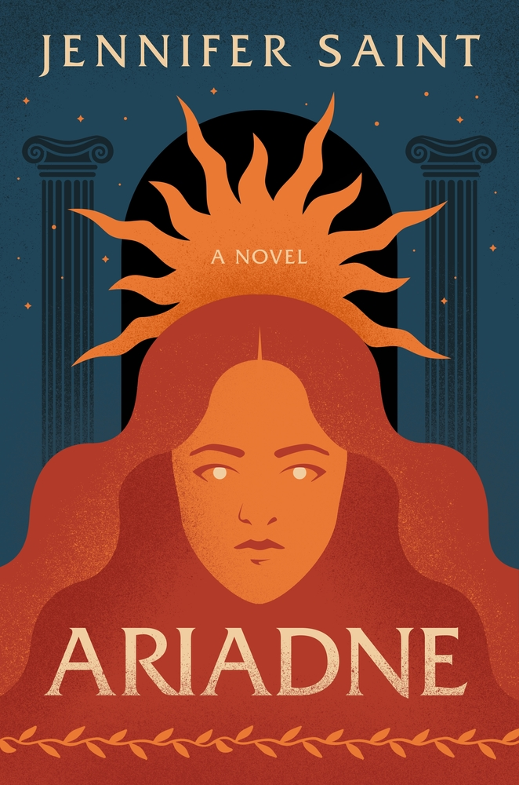

Currently reading Ariadne by Jennifer Saint
From Goodreads: "Ariadne, Princess of Crete, grows up greeting the dawn from her beautiful dancing floor and listening to her nursemaid's stories of gods and heroes. But beneath her golden palace echo the ever-present hoofbeats of her brother, the Minotaur, a monster who demands blood sacrifice.
When Theseus, the Prince of Athens, arrives to vanquish the beast, Ariadne sees in his green eyes not a threat but an escape. Defying the gods, betraying her family and country, and risking everything for love, Ariadne helps Theseus kill the Minotaur. But will Ariadne's decision ensure her happy ending? And what of Phaedra, the beloved younger sister she leaves behind?
Hypnotic, propulsive, and utterly transporting, Jennifer Saint's Ariadne forges a new epic, one that puts the forgotten women of Greek mythology back at the heart of the story, as they strive for a better world."
Catch up on past reads

June Read: Circe by Madeline Miller

July Read: Good Material by Dolly Alderton